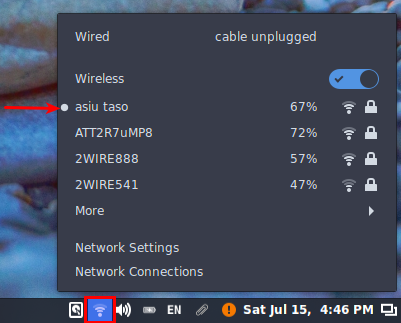
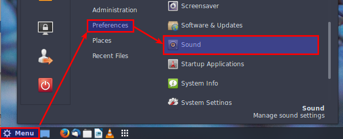
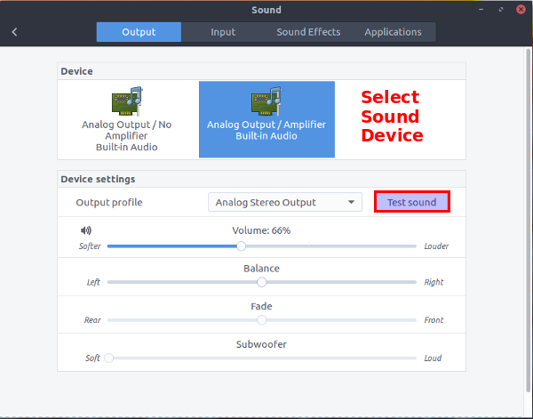
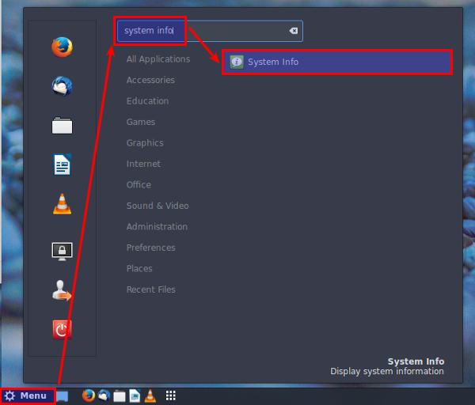
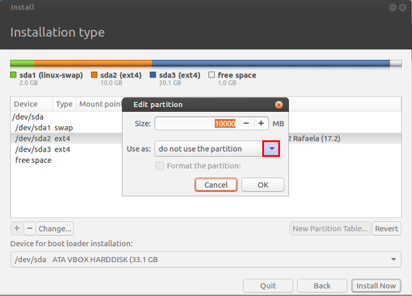
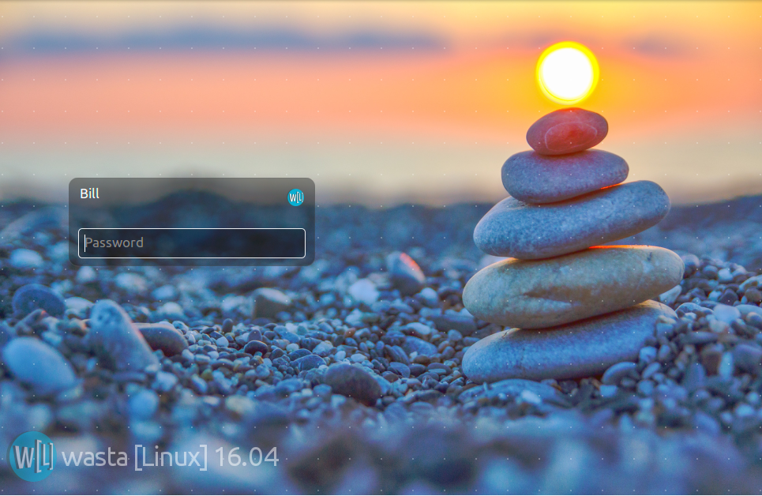

Important Note: These instructions describe how to upgrade an older Wasta Linux computer used in Manus, using the customized bootable memory stick supplied by Bill Martin. The customized memory stick is labeled “Bill Martin’s Wasta Linux 16.04 #n Customized for Manus Installer & Resources” and it will upgrade a Wasta Linux system and all software to version 16.04 (with software updates through November 2017) – including the customizations and resources specially designed for the Manus region of PNG.
These instructions, when followed carefully, will allow you to preserve the existing data during the Wasta Linux upgrade. Although this process can be done without wiping out data from the computer, it is always good to make sure you have backed up all important data to an external drive before proceeding with these installation steps.
Step 4 below is where changes are “staged” or put into a pending list to take place - you can abort the installation at any time before you get to the point of pressing the “Apply All Operations” button within step 4.
Note: This document only describes how to upgrade an older Wasta Linux computer that has been in use in Manus. If you want to totally replace a Windows-only computer system with Wasta Linux customized for use in Manus, you can also use the same customized bootable memory stick to replace the Windows system with Wasta Linux, but in that case, you should follow the instructions described in the document “How to install Wasta Linux totally replacing Windows”. If you want to make a Windows computer dual boot with Bill Martin’s customized Manus memory stick, you can also use the customized memory stick for that purpose, but in that case you should refer to the document “How to install Wasta Linux to dual boot with an existing Windows system”.
 This
document is an illustrated guide that shows how to upgrade
an older installation of Wasta Linux to version 16.04
so that it has upgraded Linux software and includes the
customizations and resources provided for Manus region computers. It
describes how to boot Wasta from the “Live” memory stick and
guides you through some checks to ensure that your computer’s
hardware is working properly before you change anything on the
computer. If you like what you see and want to upgrade to Wasta Linux
16.04, this document also shows you how to do that installation.
This
document is an illustrated guide that shows how to upgrade
an older installation of Wasta Linux to version 16.04
so that it has upgraded Linux software and includes the
customizations and resources provided for Manus region computers. It
describes how to boot Wasta from the “Live” memory stick and
guides you through some checks to ensure that your computer’s
hardware is working properly before you change anything on the
computer. If you like what you see and want to upgrade to Wasta Linux
16.04, this document also shows you how to do that installation.
This document is designed to be a guide for an Advisor, Consultant, or Technician with some knowledge about booting and operating systems - or wants to learn! This document describes how to make radical changes to the computer that cannot be easily reversed. The document is well illustrated with screenshots throughout. You will find it helpful if you read through the whole document before trying to execute it step by step.
It makes sense:
If you are using an earlier version of Wasta Linux (12.04 or 14.04), or some other version of Linux, and you want to upgrade your computer to Wasta Linux 16.04.1.1
If you want your Wasta Linux system to have the customizations and resources that have been provided for the Manus region of Papua New Guinea.
The Manus custom installer includes (pre-installed) the package wasta-custom-png-manus which makes a few interface adjustments, and installs the following programs:
adaptit
adaptit-docs
bcmwl-kernel-source
gpaint
gnote
gnupg2
ibus-kmfl
musescore
paratext-7.5
paratext-8.0
tuxtype
xiphos
wesay
wasta-sword-modules
wasta-resources-png-manus
The Manus custom installer also includes (pre-installed) the package wasta-resources-png-manus which provides the following folders of Wasta Resources that are copied to the user’s Documents directory at login:
Computer Documentation – contains 3 subfolders: KMFL Keyboard for Khehek, MuseScore Documentation, Training Documents, and a PDF file called “How to use the Nemo File Manager”. The Training Documents subfolder contains an extensive Glossary of Common Terms for Manus Translators using Adapt It and Paratext…, as well as all the Document help files for the Adapt It program.
Finances and Accounting – contains an Accounting Template.ots file for LibreOffice Calc, and a sample monthly account statement produced using that template.
Health – contains a PDF file of the whole book called “Where there is no doctor – complete” and a document file suggesting the Top “Ten Remedies for Gout”.
Key Terms Documents – contains a copy of the book Key Terms of the New Testament by Katy Barnwell, Nyindrou Keyterms (example), and Key-Terms-Work-Sheet in doc and odt formats.
Manus Maps and Census Data – contains a Manus Language Map in several forms, and 2 xls spreadsheet files containing detailed Census data for Manus Province for the 2003 Census.
Manus SIL and BTA History – Contains a large PDF file documenting the Manus Translation History (as of July 2013).
Nyindrou New Testament Glossary - contains the full Glossary of Terms published in the Nyindrou New Testament.
Paratext Handbook – contains a Paratext course handbook (2011), a Paratext 7.1 Project Sharing Manual, and a Paratext 8 Support Manual, all in PDF format.
Proper Names in the New Testament – contains a document listing the Proper New Testament Names, and a companion document of Proper New Testament Names with Nyindrou examples.
Singsing Buk Baibel – Neil Coulter Book – contains Neil Coulter’s book Music, the Bible, and Your Community in Tok Pisin, in PDF format.
Solar System Components – contains Brian Chapaitis’ SCOS vol2 Handbook v2.7 in PDF format, and a document called Instructions for wiring Manus solar systems, including two illustrated photos of a typical Manus solar system.
Topical Index – contains a document of Nyindrou Topical Index with spaces.
Using a Wasta-Linux computer – Contains the PDF document “How to use the Nemo File Manager”, an odt document called Some Common Editing Shortcuts, and an odt document called Special Keys Used For Controlling Adapt It.
Xref samples – contains standard format files containing cross reference for all New Testament books based on the published Nyindrou New Testament.
The Manus Custom Installer memory stick may also contain a partition or folder with the name InstallerDocs – which contains a PDF copy of this document you are reading, plus the following well-illustrated help documents in PDF form:
One or more of these Installer documents will be helpful as you consider Installing Wasta Linux.
You can obtain the custom installer memory stick by doing one of the following:
Ask Bill Martin to prepare the memory stick for you.
Download the Manus Customized ISO image file (about 4.1 GB) and install it to a memory stick yourself, or
Bill has a supply of inexpensive memory sticks and can provide one to you for the cost of the memory stick and any shipping required. Contact him at bill_martin@sil.org for more information.
The Manus Customized ISO image file (4.1 GB) can be downloaded from Google Drive at this link:
https://drive.google.com/file/d/1omvvb3Uzhg1mJVey-UMbFDNxd0vy8Ih6/view?usp=sharing
The ISO file will have a name similar to this: Wasta-Linux-16.04-64bit-Manus-PNG-2017-11-09.iso (the version number and date may be different). Caution: The ISO file is a BIG file and might cost a lot to download if you pay per Megabyte for Internet data. 4.1 GB is the equivalent of 4,100 MB (Megabytes) of data in one download file. The download might also take a significant amount of time unless you have fast and reliable Internet connection. If it would be too difficult or expensive for you to download and install the ISO image on your own memory stick, ask Bill Martin to prepare one for you as mentioned above.
Note that the downloaded ISO image cannot be simply copied to the memory stick. It must be written to the memory stick with special software that also makes the memory stick bootable. There are a number of programs that can write the ISO image to a memory stick, and make it bootable as a “live” session. You can use a program that is available in Wasta Linux to install the ISO file properly to a memory stick. It is the Startup Disk Creator program (also known as usb-creator-gtk). The Startup Disk Creator program is available from the Administration category of the Wasta Main Menu.
Briefly, here are the (basic un-illustrated) steps for preparing a bootable memory stick using the ISO file:
Run the Startup Disk Creator program via the Administration category of the Main Menu.
If the ISO image file is in your Downloads folder and there is just one ISO image, Startup Disk Creator will have selected it. If it is not listed in the upper pane select the correct ISO image by clicking on the Other… button.
If your computer has just one USB flash drive, Startup Disk Creator will have selected it, otherwise select the correct drive in the lower pane list.
Click on the Make Startup Disk button at bottom right.
Click Yes to confirm. The process should take 10-30 minutes to complete.
When the "Installation Complete" window opens click Quit. The memory stick can then be used to boot from, and upgrade (or install) the Linux system on your computer.
The following steps assume you want to upgrade an older Wasta Linux system to a newer one, and that you are using a USB memory stick containing the Manus customizations and pre-installed resources.
With the computer OFF, insert the “Wasta Linux 16.04 Customized for Manus” USB memory stick into the computer.
Since we are doing an “upgrade” of an existing (older) Wasta Linux system, the computer will already have Wasta Linux installed on it. Therefore, this “Get your computer to boot from the USB memory stick” step should not have too many boot complications – since it previously booted from a USB memory stick when Wasta Linux was originally installed on it.
Turn the computer ON and (on a Lenovo laptop), press the F12 function key at boot time. If you are upgrading Wasta Linux on a different brand of computer, here is a chart of special key commands at boot time:
|
Brand |
Key Command |
|
Brand |
Key Command |
|
Acer |
Esc / F9 / F12 |
|
Intel |
F10 |
|
Asrock |
F11 |
|
Lenovo |
F12 / Enter |
|
Asus |
Esc / F8 |
|
Microsoft Surface |
Volume up + Power for 5 seconds |
|
Compaq |
Esc / F9 |
|
MSI |
F11 |
|
Dell |
F12 |
|
Packard Bell |
F8 |
|
Fujitsu |
F12 |
|
Samsung |
Esc |
|
Gigabyte |
F12 |
|
Sony Vaio |
F11 |
|
HP |
Esc / F9 |
|
Toshiba |
F12 |
If you succeed at accessing the computer's boot menu directly using the F12 function key (or a key commands shown above), then select the device you want to boot from by highlighting the device in the boot menu, and pressing Enter to boot immediately from that device.
Here is a sample boot menu screen shot for a Lenovo X140e laptop (accessed directly with F12 key):

In the above illustration, the second device in the list - USB HDD: SanDisk Ultra - is the memory stick that is plugged into the computer.
After selecting the Wasta Linux USB memory stick (named “USB HDD: SanDisk Ultra” above), the Wasta “Live” session boot menu should appear as illustrated in Step 2 below.
When the initial boot sequence has successfully recognized the USB drive, it will show the Wasta-Linux 16.04 boot options menu that appears similar to the following:

The first menu item “Live – boot the Live System” is the default selection, and will be automatically selected at the end of a 10 second countdown. You can speed up the action by simply pressing the Enter key. Booting from a USB memory stick is slower than booting from a hard drive. The boot process will continue for a few minutes as it loads the system from the memory stick:
After the computer has booted to your "Live" Wasta Linux session your computer desktop should look like this screen shot below:

While the "Live" session of Linux is booted, your computer is running Linux entirely from the external USB memory stick- no changes have been made to the computer's own operating system at this point, and no changes will be made to it - unless you decide to upgrade the older Wasta system by installing the newer Wasta system on the machine. Remember: Since the system is running from the memory stick, its performance will be slower than a normal Wasta installation.
While the “Live” session is running, you can explore the newer Wasta Linux system and try out various programs. Since this is an upgrade operation, presumably the older Wasta Linux properly detected the computer’s hardware and things like the screen display, wireless network connections, keyboard, sound, mouse, etc., were working OK. You might like to verify that the new Wasta system will also work properly by checking out the following things.
If the screen brightness looks too dim, you may need to use a function key to adjust screen brightness. Sometimes Lenovo laptops initially boot with screen brightness turned down. If this is an issue look at the little images on the function keys. For example, on Lenovo T430 laptops, holding the Fn key down and pressing the F9 function key increases screen brightness (Fn + F8 decreases screen brightness).
To check the screen display click on the main Menu, then click on the Preferences category, and click on the Display item:

The Display applet will appear:

Check the "Resolution" and ensure that it is set to the normal resolution of your computer’s screen display. You can click on the drop down list, and adjust the resolution if necessary. Dual or multiple monitors are also supported.
Check out other things too, such as the ability to connect to any wireless network that the Windows system was using when booted to Windows. If the Windows computer was using wireless to connect to a network, see if the wireless signal is detected by clicking on the network connections icon in the lower right part of the panel (task bar):

Locate your wireless network’s name in the list and click on it (mine is ‘asiu taso’ as shown above). A secured network (with padlock icon) will ask you to enter its key the first time you connect:

Enter the password/key for the wireless network. You can click the check box next to Show password to make the typing of a complicated password easier. Click on the Connect button. After a few seconds check to see if the wireless connection was made. You may see a notification at the top of your screen.
Once it connects, the network connection icon changes to show a wave signal (see the panel icon in the red box below). You can also click on the connections icon again and see whether the connection has been established (indicated by the white dot next to the network name and an indication of the signal strength to the right of the name – see the illustration below):

Once your wireless network connects to the Internet, you can try it out by running Firefox and checking to see if you can load an Internet website:

You might also want to check other hardware items such as your computer’s sound system. You can test your sound system by going to the Sound applet in the Preferences category of the main Menu:

The Sound applet will appear:

With the above Sound applet you can your computers sound abilities. On the Output tab, select your computer’s sound device (if it has multiple devices) and check the sound output by clicking on the Test sound button, which bring up this speaker test dialog:

The speaker arrangement may vary depending on your computer’s sound system. You can click on the Close button to close the speaker test.
Note that there is a volume control among other sound settings in the sound applet. There are also tabs at the top of the main Sound dialog (see above), that you can use to test your Output (speakers), Input (microphone) and various Sound Effects on other tab pages of the applet. When you are done playing with the Sound applet close its window.
Go to Menu and type system info into the search box at the top of the menu, and select the System Info application that appears in the list:

The System Info applet appears:

Write down the amounts reported for Memory. In the above case it shows we have about 4GB of Memory. This information will be good to have handy later during the actual Wasta installation where we will create a Linux swap area that is the approximate size of the RAM memory of the computer.
Feel free to experiment and try out various programs that are listed in categories in the main Menu at the lower left corner of the desktop (similar to the Windows Start button). When you hover your mouse over a menu item, a brief description of that item will appear in the lower right part of the menu. Test out creating a document with LibreOffice Writer (in the Office category). If you computer has a web camera, try it out with the Cheese application in the menu’s Sound & Video category. Check out the applets in the Accessories and Preferences categories. Remember: during a live session no changes are made to your computer, so any changes or documents you create in this live session will not be saved.
The remainder of this document describes how to upgrade / install Wasta Linux on your computer. The upgrade process involves doing an actual install operation – replacing the older Wasta system.
Note that Steps 4 through 7 below are non-destructive installation steps. You can feel free to proceed down through the first part of step 8 below. Nothing will be changed on your computer if you opt to Quit before you get to the last part of step 8 below (clicking on the Install Now button).
The first step is to double click the "Install Wasta Linux 16.04" desktop icon (the red arrow is pointing at this icon in the image below):

Wait for first install wizard window to appear. It will be for selecting the language for the installation and looks as follows:

English is usually the default selection. Click Continue. The next screen appears.
If your computer has an active wireless connection – but not yet connected - the installer may ask you if you want to connect the computer to the wi-fi network:

If you wish to you can select the Connect to this network button, select the name of your network in the list, and enter your network’s security password in the Password box. But, a connection to your wireless network is optional, and being connected to the Internet is not required during the installation. So, you can also leave it set to the default “I don’t want to connect to a wi-fi network right now” - especially if you have slow or expensive Internet. You can connect after installation (or use a full wasta-offline mirror to update your software). If you wish to connect now you can do so as you did in Step 3 above when you played around with the Live system. In either case, then click Continue when you are ready to move on to the next step.
Next a Preparing to install Wasta Linux screen appears offering to download updates and third-party software while installing:

We will not install these updates and third-party software during the initial installation. You can do updates after installation, so just leave the check boxes un-ticked, and click Continue.
The next install wizard page wants to know how you want Wasta Linux to be installed on the computer, especially in relation to the existing Linux installation. The appearance of this dialog will vary depending on what previous Wasta system was already on the computer. We are assuming here that Wasta version 14.04 (based on Linux Mint 17.2 Rafaela) is the current Wasta system on the computer.
The Installation type dialog will look similar to the illustration shown below:
The first option is often pre-selected, but you should choose Something else instead. Then click Continue.
It is possible to install Wasta Linux using one of the other Installation type options, but this documentation suggests choosing Something else for the following reasons:
The Something else option allows us to have your /home directory on a separate partition. Having /home on a separate partition makes it easy to upgrade to a newer version of Wasta (or other kind of Linux) in the future without touching any of your documents, data or settings.
The Something else option allows us to reuse the existing partitions that were previously set for the older Wasta Linux system.
The last option for any installation will always be Something else. The Something else option therefore allows us to standardize this document, and reduce the number of possible variations and gotchas that might happen if we tried to describe one of the other options.
We are not planning to encrypt the new Wasta installation, nor use the Logical Volume Management (LVM) system. The use of these technologies is not necessary in most environments. They are more complicated to set up at installation time and so are beyond the scope of this document.
Note: The Installation type dialog shown above may differ a little from what you see on your particular Wasta Linux computer, but the last option "Something else" should always be available and is the one you should select to follow this document. After selecting Something else, click Continue.
The installation program uses a partitioning program to show you a graphical display of the existing partitions that are on the computer's hard drive. Its appearance and the number of partitions displayed in the dialog will depend on what partitions currently exist on the computer. You will want to study the graph showing on your screen, and the information displayed on it carefully.
The point of no return is the Install Now button at the bottom right of this installation page. Do not click on that button until the end of Step 8. Our actions in adjusting the Linux partitions are only simulated until we get them just the way we want them. We can adjust them over and over again without making actual changes to your computer. At any time you can call it quits by clicking on the Quit button – and no changes will be made to your computer. Again, don’t click on the Install Now button until you are ready for the changes to be made on your computer (at the end of Step 8 below).
We need to reset two of the Linux partitions for the new version of Wasta. There should be three Linux partitions from the old Wasta system showing in the Installation type screen. The partitions may be in a different order – but the order is not important. We will do the following:
Leave the Linux swap partition as it is (no changes are needed for it to be reused)
Set the smaller ext4 partition to use the Ext4 journaling file system at the / mount point
Set the larger ext4 partition to use the Ext4 journaling file system at the /home mount point
Note the small partition that has swap as its Type. It may be listed as the first, second or third partition. In the illustration below it is listed as the first (/dev/sda1) partition. Its Size is likely to be between 2,000 and 8000 MB (it is 1998 in the illustration). We will not change any of the settings for the swap partition. It will be reused by the new Wasta system as is, with its current settings.
The first partition we need to change is the partition that was used as the Linux root (/) partition in the older system. Click on the smaller of the two ext4 type partitions to select/highlight it as shown below. In the illustration below the smaller ext4 partition is device /dev/sda2 with a Size of 10000 MB (your smaller ext4 partition may have a different device name and Size) :
Click on the Change button. The “Edit Partition” dialog appears as shown below:

We will not change the Size of the smaller partition, but we need to reset it to again use the Ext4 journaling file system, and also set it to use the / (root) Mount point. First, click on the down arrow at the right end of the Use as drop down list (highlighted above). We want to change the setting from do not use the partition to the Ext4 journaling file system setting as shown below:
Then click on the down arrow of the Mount point drop down list, and select the / item (first item in the list – referred to as “root”) as shown below:
The settings for our root (/) partition are now complete. Check that your settings look like this Edit partition dialog below:
Double check to ensure that the following 2 settings are set:
1. The Use as selector is set to: Ext4 journaling file system
2. The Mount point is set to: /
Note: Don’t attempt to change the Size from what it was in the old system, but let it remain what it was (which is likely to be different from the Size of 10000 in the illustration above)
Click the OK button. The display will update showing the smaller (sda2) partition is reset to the / (root) Mount point as shown in the illustration below:
The last partition we want to change is the partition that was used as the Linux /home partition in the older system. Click on the largest of the two ext4 type partitions to select/highlight it as shown below. In the illustration below the larger ext4 partition is /dev/sda3 with a Size of 20129 MB (your larger ext4 partition may have a different device name, and a much larger Size than what is shown below):
Click on the Change button. The “Edit Partition” dialog appears as shown below:
We will not change the Size of the larger partition, but we need to reset it to again use the Ext4 journaling file system, and also set it to use the /home Mount point. First, click on the down arrow at the right end of the Use as drop down list (highlighted above). We want to change the setting from do not use the partition to the Ext4 journaling file system setting as shown below:
Then click on the down arrow of the Mount point drop down list, and select the /home item (third item in the list) as shown below:
The settings for our /home partition are now complete. Check that your settings look like this Edit partition dialog below:
Double check to ensure that the following 2 settings are set:
1. The Use as selector is set to: Ext4 journaling file system
2. The Mount point is set to: /home
Note: Don’t attempt to change the Size from what it was in the old system, but let it remain what it was (which is likely to be much larger than the Size of 20129 in the illustration above)
Click the OK button. The display will update showing the larger (sda3) partition is reset to the /home Mount point as shown in the illustration below:
WARNING: As indicated in the above illustration, make sure to NOT SELECT THE CHECK BOX in the Format column of the /home partition row. Formatting a partition destroys its data. You do not want to format the /home partition during the upgrade / installation of the new Wasta system.
Things to note:
We do NOT change any Size values for the partitions during the upgrade / installation..
There are no ticks in the check boxes next to the root partition (/), and the /home partition, indicating that those partitions will not be formatted during the installation process. Since this is an upgrade / installation of Linux on this computer, it is not necessary to re-format the Linux partitions. We want to preserve any data in the /home partition of the computer. The Linux installer won’t automatically format any existing Linux /home partition unless you deliberately tell it to do so.
The "Device for boot loader Installation" selector should show the computer's main hard disk (usually /dev/sda) with the hard disk's known capacity shown in parentheses.
Make sure the settings and partitions are set according to the above information. The next action will begin the upgrade operation, replacing the old Wasta system with the new Wasta system. If you don’t want to continue click the Quit button.
The installation will start and present you with some configuration screens while the system does the upgrade and installation of the Wasta Linux system. The first configuration screen will be the “Where are you?” screen that looks like this:
Click on the general area of the world map where you are located. For Manus users, the time zone that includes PNG should be highlighted (click on the south-eastern tip of PNG on the map), so that "Port Moresby" shows on the time zone selected.
Click Continue.
The next configuration screen is the keyboard layout screen which looks like this:

Click Continue to use the “English (US)” keyboard as default, unless you have a different keyboard layout on your computer.
The next screen is the “Who are you?” screen which appears as illustrated below:
Fill in the requested information and password. For Manus computers you should enter this user identity information in a special form – that will make it easier for technical consultants to maintain the Manus region computers:
Your name box. In the illustration above I’ve entered Manus-Jaha20, but you should use the same identity the computer had before this upgrade. Most Manus computers have been assigned a name identity of the form Manus-JahaN where N is the unique number identifying the computer. Since this is an upgrade of an existing system that used Wasta Linux, the computer should have been given a user name already. You should use whatever identity that the computer previously had before your present upgrade operation. The identity name may have also been showing above the Manus flag in the default background image on the screen before the upgrade.
Your computer’s name box. The computer’s name is the name that it will have on any local network. It is automatically entered as you type the identity name field above it. You can adjust the computer’s name if you like but whatever the installer enters is probably OK.
The Pick a username box. This name should be the same as the identity you type in the Your name box. It will be the name of the user’s folder in the computer’s /home folder.
The Manus region computers have generally all been given a similar password that differs only by the a number at the end of the password. This number agrees with the number at the end of the computer’s identity name. The general form is sunamN where the N is the same number as the number of the computer’s identity and user name. This password scheme makes the computer somewhat secure from random people, but is easy to remember since it is tied to the number. (Note: sunam is the word manus spelled backwards)..
You should keep the button selected “Require my password to log in.”
Click Continue. The installation process does not require any additional input from you. The installer will display a little slide show that describes some of the features available in (Ubuntu) Linux. The installation progress is displayed in the bar at the bottom of the slides. Most installs take less than 30 minutes.
When the installation is finished a dialog will appear that looks like this:

Click on the Restart Now button. As the computer shuts down you will see:

Remove the memory stick at the prompt and press Enter to reboot the computer.
Each time you boot into your Wasta Linux system, you will need to type your password into the login box. Your login password is the password you set during the installation. The same password is also used when you do administration tasks such as installing software:

If the prompt inside the login box asks for your Username, you can type it in, or click on the user name with a mouse to get the Password prompt.
Once the system has started up, and you have logged in, you can set the background image: Right-click on the desktop and select Change Desktop Background. The Backgrounds applet will appear:

Click on the + (Plus) button (it is highlighted in the lower left corner of the image above). A directory dialog will appear that you can use to locate the background image. For the Manus region computers you should select the manus_jaha_background_images folder that is located in the upgraded computer’s Pictures folder. This will add the manus_jaha_background_images folder to the list of locations in the left pane of the Backgrounds applet. Select that folder. The Manus-JahaN images should display and may look like this:
The folder has 30 Manus-Jaha backgrounds. Select the image whose filename agrees with the N number used in the user name (and password suffix) above. Unfortunately, the list of images within the Background applet tends to truncate the file names on small displays, making it difficult to identify the number N that is suffixed on the file name and is associated with the user name you want to select. You will just have to pick some and look at the desktop image you get until you get the desired image for the upgraded computer.
Close the Backgrounds applet window when you have set the desired desktop background.
While most software and resources are immediately available for use, some programs like Paratext and Adapt It will need additional setup and configuration.
The Paratext registration information will need to be entered for the specific user of the computer. Paratext will also need to have its projects created, and if used in collaboration with Adapt It, Paratext will need the following projects setup as a minimum for collaboration with Adapt It:
* A source language Paratext project - containing the Scripture books imported into the Paratext project that will be used in Adapt It as source text for adaptation work.
* A target language Paratext project - containing Scripture books created as empty books (i.e., "empty" but containing chapter and verse numbers when created within Paratext). This initially “empty” project will be used in Adapt It as target or translation text for adaptation work, and will be transferred automatically to Paratext each time the adaptation document is saved within Adapt It.
Adapt It can be configured to collaborate with Paratext, but the necessary Paratext projects need to be created first (see above). Once the Paratext projects are created for the source language and target languages, an administrator can make the "Administrator" menu visible within Adapt It, and use its “Setup Or Remove Collaboration” menu to set up one or more Adapt It collaboration projects between Adapt It and Paratext. See the Adapt It HTML document named Help_for_Administrators.htm for more details on how to set up collaboration between Paratext and Adapt It.
Installing
Wasta Linux - to dual boot with an Existing Windows system Page